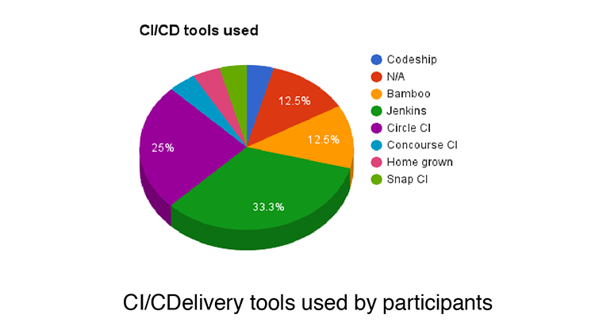
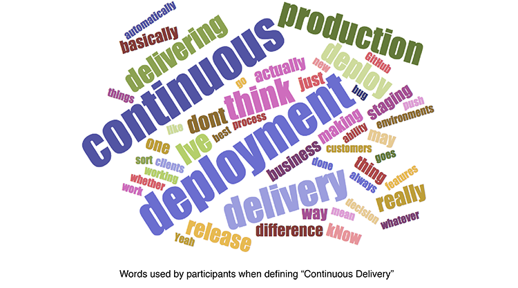

Our product teams care deeply about understanding what our users want. We spend a lot of time listening to feedback, chatting with users and seeking their input. Unlike the more customary feedback sessions, Intercom-style chat, and usability studies that we see in most organizations, one type of user research that we do on an ongoing basis is contextual inquiry.
Contextual inquiry research combines a directed interview with an observation session to understand what a user is saying and feeling, as well as what they do and how they behave on a daily basis. This kind of research helps us to learn more about our community members - how they work, how they want to work, what could be better and what is already pretty great. We learn a lot from this kind of research and use our findings to help us build better products.
As supporters of open source and promoters of software excellence, we also know that our findings can be helpful to others in our space and so we want to share them with you. This blog post will outline our goals for our most recent contextual research study, how we conducted the study and our main findings. We hope it’s helpful to you and your team! – Emily Luke and Suzie Prince
Goals
The two main goals for our study were to:
- Identify what users know about continuous integration (CI) and continuous delivery practices and principles.
- Identify pain points around practicing continuous delivery on a daily basis.
The Study
We conducted this study using contextual inquiry — a research methodology that takes a combined interview and observation approach. We set up calls, video chats, and in-person conversations with software engineers at varying organizations and with varying levels of expertise to understand how they work, what their big pains are, and the nuances of their days. In most cases, we did a Q&A for part of the session and then asked users to share their screens to show us the CI/continuous delivery tools they currently use and how they use them.

After gathering the research, we used a variety of qualitative and quantitative techniques such as an affinity wall, word analysis and data counts to look for trends and meaning.
Who
The study took place between February and June 2016. There were 20 participants from 20 different organizations from North America and Europe. The majority of the participants were practicing software engineers whose experience ranged from three years to 20 years. Some participants were also in supporting roles such as engineering managers, founders, data analysts and QAs. Most participants were not users of our products and were selected for their current role and responsibilities rather than familiarity with specific products.

Findings
There were four key findings we want to share from this study. They are separated out below into the following categories: Definitions, Development Practices, Speed, and Stickiness.
1. Definitions
A key focus of our study was learning about what people know about continuous integration and continuous delivery practices and principles. In order to assess this we asked each participant to define continuous integration, continuous deployment, deployment pipelines, continuous delivery and DevOps. We then further explored their understanding by hearing about their current practices and processes as well as future goals.
Terminology confusion
There was no consensus on the definitions of CI, continuous delivery, or continuous deployment… at all. Participants confused the definitions of continuous integration, continuous deployment and continuous delivery, often repeating the same definitions for all three terms.
“I honestly don’t really know what the difference between that [continuous delivery] and continuous deployment would be.”
Continuous Integration
Most participants were unable to comprehensively define CI.[^1] However, many of those who gave an incomplete definition (specifically missing the need to integrate to master/trunk/mainline daily) said they were practicing CI. In particular, of those who said they were using long-lived branches and not regularly checking into a master branch, 90% also said they were practicing continuous integration. With the exception of just more than 10%, everyone using a CI tool said they were practicing CI. It appears that the use of a CI server or tool is fairly synonymous with doing CI.
Continuous integration and continuous deployment vs. continuous delivery
Participants are far better able to define continuous deployment than continuous delivery. When describing continuous delivery many would repeat the definition they used to describe continuous deployment. This was exemplified by the use of the phase “continuous deployment” which appeared four times more frequently when describing “continuous delivery” than “continuous delivery” did when describing “continuous deployment”. Likewise, it was clear to us from this study that people were way more likely to use the terms “continuous integration” and “continuous deployment” to explain how they worked (or would like to work) than continuous delivery.
Continuous deployment was seen as an aspiration for many surveyed, but most believed that they were currently only practicing CI.


Definitions vs practises and aspirations
Interestingly, many people are still deploying fairly frequently (daily or weekly) and with relative ease even if they didn’t know or could not define the terms surrounding these practices or if they didn’t think they were practicing these things at all. Likewise, some participants unable to define continuous delivery and/or who said they were not practicing continuous delivery did describe a process that was close to our definition of continuous delivery.
DevOps
This was almost universally remarked as “hard to define”. The confusion of “ops” with “DevOps” also led some people to remark that it was hard for them to see how anyone could work without DevOps (meaning without operations at all).
“A lot of people have different definitions of it over the years. What I think it boils down to is the organizational practices that allow various teams to come together and successfully deliver software.”
These results were more surprising than we had thought they would be. Most people could not define continuous delivery, CI, continuous deployment, and DevOps - even those who said that they were practicing these things. Although we were already aware from a previous quantitative survey that users of our products (Snap CI and GoCD) were statistically more likely to understand continuous delivery than those using other CI/continuous delivery tools, we were not expecting the confusion between continuous integration, continuous deployment and continuous delivery to be so pronounced.
2. Development Practices
Agile
With all the talk of agile in many parts of the software community we were surprised to find that the majority of people are not self identifying as agile practitioners. Some remain unaware of agile, some identify that they are not agile (“we are waterfall”) and the majority of those that remained recognize agile influences and spoke of specific agile practices that they use (such as iterations or sprints or two week cycles, stories or tasks and standups) when helpful. Agile has become a defacto a choose-your-own-adventure for a lot of software development teams.
Branches, code reviews and pairing
Of those surveyed, over 60% described their practices as using branches or branch-based development. In those cases participants regularly used branches for feature development or had long-lived (~ over a day or two) branches of some kind.
There were particular sets of practices that we recognized occurred frequently together, e.g. branched-based development was often accompanied by code reviews and low levels of pairing. In particular, even with the small sample size, we were able to see that there was statistical significance (at 80% confidence) that people who used branch-based development were likely not to be pairing on a daily basis and that those not pairing regularly were likely to practice code reviews. In many cases, code reviews were highlighted as a painful practice.
“Code review tends to be fairly brutal. The idea being the code should be well formed and if it’s not well formed it just doesn’t pass code review, so people learn very quickly not to get precious about their code.”
Likewise, it was very interesting to see that pair programming was not considered to be a crucial development practice, even for those who considered themselves to be doing agile development. Only 13% of participants paired on a daily basis. While not practicing pairing regularly, some remarked that it was used when necessary, such as when training new team members, when there were hard problems or when someone asked for support.
3. Speed
When asked what the #1 thing most teams could do better, multiple answers hinged on doing things quickly. Even individuals in teams who were used to deploying very regularly - as needed, daily or weekly rather than monthly or yearly - expressed a desire to be quicker. Sometimes the urgency was explained as a frustration with slow tools or slow processes but other times it was a desire and need for urgency and to “be better”. It is clear that software teams in many organizations are feeling the push to deliver quickly and being faster becomes an important goal for many.
“I think we make pretty good software. I think we can make it faster. I think that we have a lot of pain around iteration cycles. I make a change and I want to see that it passed tests and it takes me a long time for that to happen.”
External research such as Puppet’s State of DevOps survey supports these findings and show us what’s driving this urgency on engineering teams. In the 2016 survey, Humble, et. al. concluded that high performers deploy 200 times more frequently than low performers, with 2,555 times faster lead times. It is therefore easy to understand that many teams are striving for these more frequent deployments and faster lead times.
4. Stickiness
“Once something is ingrained, it’s hard to replace it but if we think it’s causing us more pain, we’re willing to do the investigation to determine what it would take to replace it.“
CI/continuous delivery tools are sticky… even when they are painful. Despite frequently hearing about frustrations with CI/continuous delivery tools, we also found that participants in our study seem to stick with their current CI/continuous delivery tools even if they recognized pain with them. People recognized that CI/continuous delivery tools need to be reliable but also continued to use tools that were embedded in their process even if they had prior reliability problems. Participants also expressed numerous times that moving tools was not easy and that although new tools were described as desirable, people also seemed reluctant to undergo the change for limited or unknown new value.
We see immense value in understanding customers, users and the software community in general. As highlighted by findings in this study, users of specific technologies are not necessarily a good indication of the market at large. Similarly, in-depth conversations and observations can reveal nuances that surveys and/or shallow conversations can obscure. We highly recommend that all creators of software for developers use techniques such as contextual inquiry research to learn more. We also encourage you all to add to our growing knowledge about software by sharing your findings publicly.
In future blog posts we hope to share more findings from other research studies we do, share tips and tricks for conducting contextual research and details about other methods of ethnographic research that could be useful to you.
We are also open to your feedback. Let us know how we can improve our tools, techniques, and how we share information. You can comment below or tweet us at @emilyeatskale and @pm_suzie.
Footnote: [^1]: Our standard definition for continuous integration in this study was set as “Everyone merges to mainline/master/trunk at least once a day. Each merge is built and tested on an integration machine.”
Note: This post was originally published on the SnapCI Blog.